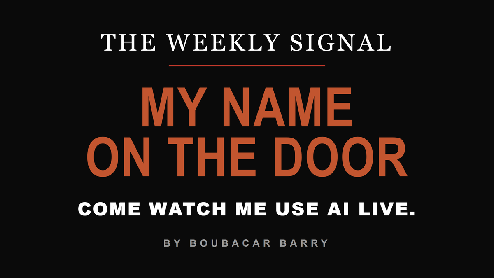
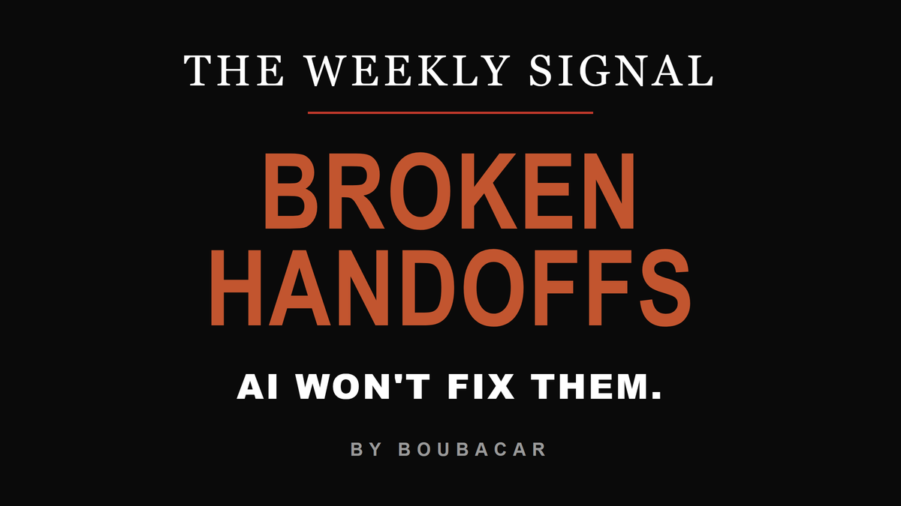
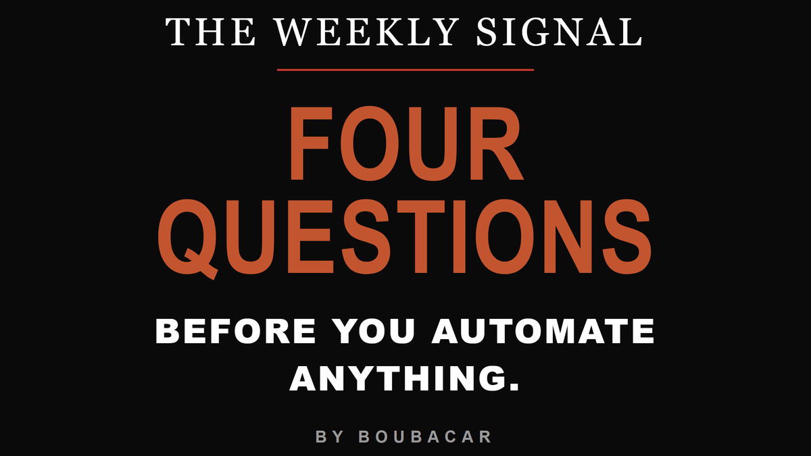
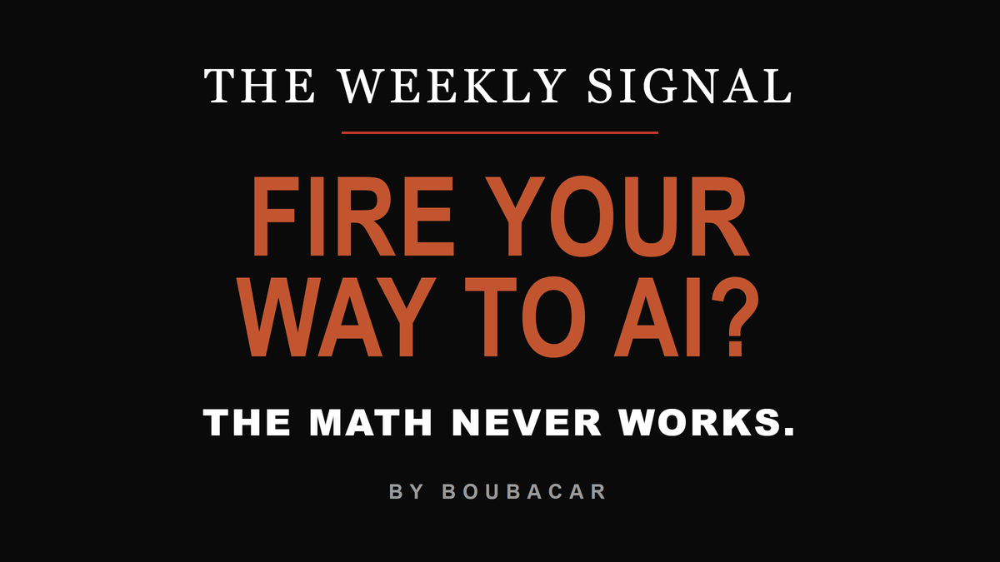

Each issue has its own copy boxes: title, subtitle, email body, LinkedIn post, LinkedIn first comment, X post. Tap Copy, paste, done. You never highlight anything.
Email goes out on its day. The LinkedIn + X versions are NATIVE posts (value lives in the post) and go the NEXT day. Dates are on every box.
X: the link to the full Beehiiv post is built into the tweet (it reads the full piece AND has the subscribe box). Each X box shows its character count, always under 280.
LinkedIn: no link in the post body (LinkedIn throttles those). The link sits in its own "first comment" box, drop it as your first comment right after you post.
For today's issue the Beehiiv link is live. For Jul 20 / 27 / Aug 3 the link box says "[paste after you schedule]", because that public URL does not exist until you create the post in Beehiiv.

I put my name on the door
Why I booked a room, invited strangers, and told them to watch me use AI live.
Two weeks ago I did something that still makes me a little nervous. I booked a room, put my name on the door, and told people to come watch me use AI live. No slides full of theory. One real job, built in front of them, on their own laptops. Here is why I stopped waiting. For months I have leaned on AI to do work I used to do by hand. The outreach. The scheduling. The back-office grind that used to eat my evenings. And it has burned me more than once. One task of mine ran hundreds of times looking perfectly healthy and produced nothing, because the source it pulled from had blocked it on day one and nothing failed loudly. I did not learn that from a course. I learned it the way you learn anything real. You build one thing, you trust it too soon, and you watch it fail small enough that it costs you a weekend instead of a client. That is the whole reason this workshop exists. Most people meet AI through a wall of tools and a lot of noise, and they either freeze or they get burned. The way through is not more reading. It is building one real thing, rough at first, with someone in the room who already made the expensive mistakes so you get to make the cheap ones. One move to make this week, whether or not you can be there. Pick one job you do by hand that repeats every week, that you could write down for a new hire, and where an eighty-percent-right result is a quick fix and not a disaster. That is your first one. Start there. And if you want to build it live, with me in the room: I am teaching AI Without Getting Burned on Thursday, July 30, 7 pm in Sandy. 90 minutes, in person. You leave with one real thing already working. There are a limited number of free seats, no card needed: catalystworks.consulting/ai-checklist Three things before you go 1. Forward this to one business owner who is trying to figure out where AI fits in their business. One forward is more useful to me than ten retweets. 2. Was this forwarded to you? Subscribe at signal.catalystworks.consulting. The moment you do, you also get a free scan that shows how visible your business is when people ask AI for a recommendation. 3. Reply with one sentence about what is stuck in your week. I read every one and it shapes what ships next. Boubacar I spent over a decade in HR at a Fortune 100. Now I'm a fractional AI leader who helps small businesses put AI to work. boubacar@catalystworks.consulting · signal.catalystworks.consulting
Two weeks ago I booked a room, put my name on the door, and told people to come watch me use AI live. No slides full of theory. One real job, built in front of the room. Here is why I stopped waiting to feel like the expert. For months I have leaned on AI to do work I used to do by hand. The outreach. The scheduling. The back-office grind that ate my evenings. And it has burned me more than once. One task of mine ran for weeks looking perfectly healthy and produced nothing, because the source it pulled from had blocked it on day one and nothing failed loudly. I did not learn that from a course. I learned it the way you learn anything real. You build one thing, you trust it too soon, and you watch it fail small enough that it costs you a weekend instead of a client. So if AI has you either frozen or burned, here is the move. Pick one job you do by hand every week, one you could write down for a new hire, where an eighty-percent-right result is a quick fix and not a disaster. Build that one first. The longer version of this went to my subscribers first. That is where I go deeper on where AI actually fits.
The full story is on my newsletter. Read it and subscribe here: signal.catalystworks.consulting/p/i-put-my-name-on-the-door
I put my name on a room and told people to come watch me use AI live. The rule I earned the hard way: automate one weekly job you could hand a new hire, where 80% right is a quick fix, not a disaster. Full story: signal.catalystworks.consulting/p/i-put-my-name-on-the-door

AI exposes broken handoffs. It will not fix them.
The bottleneck was never the tool. It is the seam between two people, and AI makes it louder.
Buying AI before you fix your workflow is like bolting a bigger engine onto a car with no steering. The bottleneck is almost never the tool. It lives in the seam between two owners. Sales to onboarding. A draft to a reviewer. A finished task to whoever ships it. That is where work disappears, where context dies, and where AI exposes the gap the loudest. I learned this the hard way in my own business. I had a process that could sort and score incoming work perfectly well. And then nothing happened, because the result landed in a queue I never opened. The handoff from the machine back to me was the whole bottleneck. The model was not the problem. The seam was. What fixed it was not a smarter model. It was a simple alert on my phone with one button, and a way to actually close the loop when a task was done. Small, boring pieces. Zero new AI. Most teams drop an AI tool into a broken process and call the broken process a strategy. The tool exposes every gap. It closes none of them. That part is your job. Here is how to find the broken handoff before AI finds it for you. Walk one task end to end. Not the clean version. The real one. Where does it pause? Who is waiting on whom? Where does a status sit stale for more than a day? That is your seam. Fix the seam first. Then add the engine. In that order, every time. Want to find your seam with someone who already made the expensive mistakes? I am teaching AI Without Getting Burned on Thursday, July 30, 7 pm in Sandy. 90 minutes, in person, a limited number of free seats: catalystworks.consulting/ai-checklist Three things before you go 1. Forward this to one business owner who is trying to figure out where AI fits in their business. One forward is more useful to me than ten retweets. 2. Was this forwarded to you? Subscribe at signal.catalystworks.consulting. The moment you do, you also get a free scan that shows how visible your business is when people ask AI for a recommendation. 3. Reply with one sentence about what is stuck in your week. I read every one and it shapes what ships next. Boubacar I spent over a decade in HR at a Fortune 100. Now I'm a fractional AI leader who helps small businesses put AI to work. boubacar@catalystworks.consulting · signal.catalystworks.consulting
Buying AI before you fix your workflow is like bolting a bigger engine onto a car with no steering. The bottleneck is almost never the tool. It lives in the seam between two people. Sales to onboarding. A draft to a reviewer. A finished task to whoever ships it. That is where work disappears and where AI exposes the gap the loudest. I learned this in my own business. I had a process that could sort and score incoming work perfectly well. And then nothing happened, because the result landed in a queue I never opened. The model was not the problem. The seam was. Most teams drop an AI tool into a broken process and call the broken process a strategy. The tool exposes every gap. It closes none of them. That part is your job. Here is how to find your seam before AI finds it for you. Walk one task end to end. Not the clean version, the real one. Where does it pause? Who is waiting on whom? Where does a status sit stale for more than a day? Fix that first. Then add the engine. I sent the full breakdown to my subscribers first.
The full breakdown is on my newsletter. Read it and subscribe here: [paste this issue's Beehiiv post URL after you schedule it]
Buying AI before you fix your workflow is like a bigger engine on a car with no steering. The bottleneck is the seam between two people. AI exposes that gap. It does not close it. Fix the seam first: [paste this issue's Beehiiv post URL]

The four questions I score before I automate anything
The automation that ran 880 times and produced nothing, and the four-question test that would have caught it.
One of my automations ran 880 times before I noticed it had produced nothing. Green logs. Moving queue. Blank output, every single run, because the source it pulled from had quietly blocked it from day one. Nothing failed loudly, and that was exactly the problem. An automation you trust is an automation you stop watching. That incident is why nothing in my operation gets automated anymore until it survives four questions: 1. Frequency. How often does the job repeat? Daily beats weekly beats monthly. Repetition is where a handoff compounds. 2. Time drain. How much of the week does it actually eat? Count the small interruptions, they are the expensive part. 3. Rules-clarity. Could you write the steps down so a new hire could follow them? A job that lives only in your head is not ready to hand to a machine. 4. Stakes if rough. If the output came back eighty percent right, is that a quick fix or a damaged client relationship? Your first workflow should be one where a near-miss is cheap. Score your candidate jobs, five points each, twenty max. The winner is almost never the exciting idea. It is the boring job you could write the manual for. That is what makes it buildable this week. A tool is a thing you open. A workflow is a thing that runs. Go build one that earns the trust before it gets the keys. P.S. If you want to run this scoring live, on one of your own real jobs, come do it with me. I am teaching AI Without Getting Burned on Thursday, July 30, 7 pm in Sandy. 90 minutes, in person. You leave with one real thing already working and a clear rule for what to skip. There are a limited number of free seats, no card needed: catalystworks.consulting/ai-checklist Three things before you go 1. Forward this to one business owner who is trying to figure out where AI fits in their business. One forward is more useful to me than ten retweets. 2. Was this forwarded to you? Subscribe at signal.catalystworks.consulting. The moment you do, you also get a free scan that shows how visible your business is when people ask AI for a recommendation. 3. Reply with one sentence about what is stuck in your week. I read every one and it shapes what ships next. Boubacar I spent over a decade in HR at a Fortune 100. Now I'm a fractional AI leader who helps small businesses put AI to work. boubacar@catalystworks.consulting · signal.catalystworks.consulting
One of my automations ran hundreds of times before I noticed it had produced nothing. Green logs, moving queue, blank output every run. Nothing failed loudly, and that was the problem. That is why nothing in my business gets automated now until it passes four questions: 1. Frequency. How often does the job repeat? Daily beats weekly beats monthly. 2. Time drain. How much of your week does it actually eat? The small interruptions are the expensive part. 3. Rules-clarity. Could you write the steps down for a new hire? A job that lives only in your head is not ready for a machine. 4. Stakes if rough. If it came back eighty percent right, is that a quick fix or a damaged client? Your first one should be cheap to get wrong. Score each out of five. The winner is almost never the exciting idea. It is the boring job you could write the manual for. I go deeper on this with my subscribers first.
The full breakdown is on my newsletter. Read it and subscribe here: [paste this issue's Beehiiv post URL after you schedule it]
An automation ran hundreds of times and produced nothing. No loud failure, just blank output. Nothing gets automated now until it clears four questions, and the winner is always the boring one. The four: [paste this issue's Beehiiv post URL]

You cannot fire your way to an AI win
The math on replacing people with AI almost never survives reality. Here is what does.
The assumption I keep seeing is that AI lets you cut people and pocket the difference. That math rarely survives contact with reality. Here is what actually happens. A team hands a function to a model. The model handles most cases cleanly. The rest need judgment, context, and the memory of the person who just got let go. Now your operations lead is doing the work the model could not, with none of the original context, and customers are feeling the gap. I run my own business with AI doing a lot of what I used to do by hand, so I know how it actually goes. Nobody got cut to make my setup exist. The work AI does for me is work I could not do at all before. Outreach at the volume of a small team. Back-office tasks that used to eat my evenings. Checks that catch mistakes before they cost me a weekend. The expansion story is more honest than the replacement story. AI lets one operator hold ground that used to need a team. It does not let a team shrink by the same headcount and still produce the same output. The arithmetic is not symmetrical, and that is the whole point. Why does the replacement story keep getting told? It sells consulting, and it gives an executive a clean number for a slide. Fire a group, save the salary, deploy the model, call it transformation. What the slide leaves out is the long tail the model cannot handle, the team quietly absorbing it, and the customer experience slipping while the savings and the costs sit on two different ledgers. AI is not a cheaper version of headcount. It is a different kind of capacity. The operators who treat it that way keep their people and grow their reach at the same time. The ones who treat it as headcount math end up paying for the model, paying the consultant, and paying their team overtime to cover what the model dropped. The framing is the strategy. Everything after it is consequence. That is the work I do at Catalyst Works. I help owners find where AI actually fits, without getting burned. If that is the season you are in, come say hello: catalystworks.consulting Three things before you go 1. Forward this to one business owner who is trying to figure out where AI fits in their business. One forward is more useful to me than ten retweets. 2. Was this forwarded to you? Subscribe at signal.catalystworks.consulting. The moment you do, you also get a free scan that shows how visible your business is when people ask AI for a recommendation. 3. Reply with one sentence about what is stuck in your week. I read every one and it shapes what ships next. Boubacar I spent over a decade in HR at a Fortune 100. Now I'm a fractional AI leader who helps small businesses put AI to work. boubacar@catalystworks.consulting · signal.catalystworks.consulting
Note: this sends after July 30, so the email closes with a soft Catalyst Works invite, not the workshop. If you have a post-workshop offer by Aug 3, swap that one close.
The assumption I keep seeing is that AI lets you cut people and pocket the difference. That math rarely survives contact with reality. A team hands a function to a model. It handles most cases cleanly. The rest need judgment, context, and the memory of the person who just got let go. Now your operations lead is doing the work the model could not, with none of the original context, and customers feel the gap. I run my own business with AI doing a lot of what I used to do by hand, so I know how it goes. Nobody got cut to make that work. The work AI does for me is work I could not do at all before. AI is not a cheaper version of headcount. It is a different kind of capacity. The operators who treat it that way keep their people and grow their reach at the same time. The ones who treat it as headcount math pay for the model, pay the consultant, and pay their team overtime to cover what the model dropped. The framing is the strategy. Everything after it is consequence. I write more of this for my subscribers first.
The full piece is on my newsletter. Read it and subscribe here: [paste this issue's Beehiiv post URL after you schedule it]
AI does not let you fire people and pocket the difference. The math never survives reality. It handles the easy cases. The hard ones still need the judgment of the person you cut. Expansion, not replacement: [paste this issue's Beehiiv post URL]
Email (Beehiiv): Title box → post Title. Subtitle box → Subtitle. Email body box → the post body. Set the cover image to that card's header. Send a test to yourself first.
LinkedIn: paste the LinkedIn box into a feed post (not an Article). Post it. Then paste the "first comment" box as your first comment (that is where the link lives, LinkedIn favors link-free posts).
X: paste the X box as a single post. The link is already in it. Each is under 280 characters including the link.
For Jul 20 / 27 / Aug 3, replace "[paste this issue's Beehiiv post URL]" with the real public URL once you schedule that issue in Beehiiv. Today's issue already has its live link.
Nothing here auto-posts. This page is only the copy source.